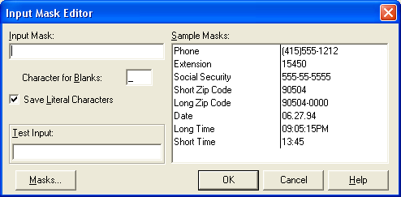

Кнопки BitBtn
Такие кнопки используют, в основном, для украшательства приложения.
Они отличаются от обычной кнопки Button прежде всего тем, что вместе с надписью на кнопку можно вывести и картинку.
Кнопка с картинкой, безусловно, выглядит нарядней.
Откройте новый проект и установите на форму кнопку BitBtn с вкладки Additional палитры компонентов.
В свойстве Caption этой кнопки напишите "Открыть файл".
Далее, выберите свойство Glyph – это свойство раскрывающееся, нужно щелкнуть по кнопочке с тремя точками в этом свойстве, чтобы открылся список.
Открылся редактор картинок.
Нажмем кнопку Load (Загрузить).
По умолчанию открывается стандартная папка с проектами Delphi, но картинок здесь нет.
При установке Delphi-7 картинки устанавливаются в папку
C:\Program Files\Common Files\Borland Shared\Images\Buttons
Откройте эту папку в редакторе.
Как только вы выберите картинку (то есть, один раз щелкните по ней), в правой части окна отобразится рисунок этой картинки.
Здесь вы видите два изображения для каждой кнопки – первое изображение будет у активной (доступной) кнопки, второе – для неактивной.
Теперь у вас есть возможность прогуляться по коллекции изображений с помощью кнопок управления курсором, выбирая подходящее для кнопки изображение.
Поскольку мы хотим сделать кнопку для открытия файла, то выберем стандартное для этого изображение в файле "FILEOPEN".
Картинка не очень привлекательна, но пока что воспользуемся ей.
Выбрав файл, нажмите кнопку "Открыть".
Изображение попало в редактор картинок.
Теперь, чтобы принять изображение, нажмем кнопку "ОК".
Если картинка вместе с надписью не помещается на кнопке, то увеличьте ширину кнопки.
Бросьте еще одну кнопку BitBtn, в свойстве Caption укажите "Закрыть файл", и попробуйте самостоятельно подобрать картинку для этой кнопки.
В этой кнопке нам может пригодиться несколько свойств.
Свойство Layout определяет, где будет находиться картинка.
По умолчанию она слева – blGlyphLeft, но можно установить картинку и справа, а также сверху или снизу, правда в этом случае придется корректировать высоту кнопки.
Свойство Margin также определяет положение изображения и надписи.
По умолчанию оно равно "-1".
Если же указать значение больше нуля, то надпись и изображение будут сдвигаться вправо на указанное количество пикселей.
Свойство Spacing по умолчанию равно 4.
Это количество пикселей, отделяющих изображение от надписи.
Вы имеете возможность менять это расстояние по своему усмотрению.
Еще одно интересное свойство – Kind.
Это свойство определяет поведение кнопки в некоторых случаях.
По умолчанию оно равно bkCustom (заказной).
То есть, в данном случае вы сами определяете поведение кнопки – как выглядит изображение, что написано на кнопке, что будет указано в обработчике нажатий на кнопку.
Однако попробуйте установить на форму еще одну такую кнопку, и в свойстве Kind выбрать bkClose.
Сразу же появилось стандартное изображение Delphi закрытия формы, и на кнопке написано Close (Закрыть).
Поменяйте текст в свойстве Caption на русский вариант, затем сохраните проект и откомпилируйте его.
Нажмите на эту кнопку, и форма закроется.
Вообще то обычно не рекомендуют использовать свойство Kind, желательно самим программировать поведение кнопки.
Во-первых, вы можете захотеть для этой кнопки выбрать другое изображение, во-вторых, процедура закрытия формы может быть гораздо сложней обычной строки "Close;", ведь если есть открытый файл или база данных, их вначале нужно закрыть, если есть какие то несохраненные данные, их нужно сохранить перед закрытием формы.
Впрочем, использовать это свойство или нет – дело вкуса каждого программиста.
О картинках. Стандартная коллекция изображений для кнопок у Delphi не блещет красотой и богатым выбором.
Однако вы можете найти в Интернете очень много бесплатных коллекций таких картинок, и скачать их.
Далее выбирайте те картинки, которые на ваш взгляд выглядят привлекательно.
Если же вы чувствуете в себе талант художника, можете нарисовать изображение сами, воспользовавшись редактором картинок Image Editor, который устанавливается вместе с Delphi.
Совет.
Помните, что вся программа должна выглядеть в общем стиле.
Если вы изменили цвет главной формы, желательно изменить его и у всех дочерних форм на такой же.
Если на главной форме вы используете вместо простых кнопок кнопки TBitBtn, и выбрали для них какую-то стороннюю коллекцию, то желательно использовать такие же кнопки и в других формах, и картинки использовать из той же коллекции.
Другие свойства кнопок
Есть еще несколько свойств, общих для всех кнопок, которые вам необходимо знать.
Измените свойство Caption у кнопки "Открыть файл" - поставьте перед первой буквой символ "&".
На кнопке буква "О" оказалась подчеркнутой.
Этим вы задали для кнопки "горячие клавиши", то есть теперь все равно – нажать ли на эту кнопку, или нажать клавиши <Alt + O>.
Запомните – символ "&" перед буквой задает горячую клавишу.
Вы можете поставить его перед любой буквой, не обязательно перед первой.
Попробуйте сами!
Свойство Cancel по умолчанию равно False.
Если же в нем установить True, то при выполнении программы нажатие кнопки <Esc> будет выполнять то же действие, что и нажатие на эту кнопку.
Это свойство желательно изменять для кнопок "Отменить" в разных диалоговых окнах.
Свойство Default, установленное в True, делает кнопку главной по умолчанию.
Если пользователь нажмет <Enter>, это будет эквивалентно нажатию на данную кнопку.
Здесь есть исключение – если в этот момент в фокусе будет другая кнопка, то нажатие на <Enter> вызовет все же обработчик события той кнопки, что была в фокусе.
Свойство ModalResult иногда используется в модальных формах.
По умолчанию оно равно mrNone, то есть, ничего.
Однако вы можете выбрать любое значение из этого списка.
Предположим, в модальной форме вы установили кнопки "Да", "Нет" и "Отмена".
Тогда в свойстве ModalResult этих кнопок вы можете установить значения mrYes, mrNo и mrCancel.
При этом обработчик события для этих кнопок создавать не нужно – нажатие на любую кнопку закроет форму.
А в момент закрытия модальной формы, свойству ModalResult этой формы запишется значение ModalResult той кнопки, которая закрыла форму.
Далее, после вызова этой формы вы можете написать проверку, какая кнопка была нажата:
Form2.ShowModal;
if Form2.ModalResult = mrIgnore then
ShowMessage('Нажали "Игнорировать"');
Вот, собственно, и все, что нужно знать о кнопках.
Остались еще кнопки SpeedButton, они предназначены для создания панелей инструментов, и о них мы поговорим позже.
Компонент MaskEdit
Этот компонент подобен обычному Edit, но предназначен для задания маски ввода пользователем данных.
Очень часто возникает необходимость задать правильный формат для ввода пользователем каких-то данных, и тут MaskEdit будет незаменима.
Действие этого компонента лучше изучать на примере.
Создайте новое приложение.
На форму установите компонент Label, в свойстве Caption которого пропишите "Введите дату:".
Слева от него поместите компонент MaskEdit.
Как видите, большинство свойств этого компонента соответствуют компоненту Edit, и это неудивительно – ведь MaskEdit произошел от простого Edit и унаследовал все его свойства.
Самое интересное свойство этого компонента – EditMask.
Щелкните по нему, а затем по кнопочке, которая открывает редактор.
В строке Input Mask вы можете задать нужный формат (маску).
В поле Sample Mask вы видите типы масок и примеры формата.
Выбрав здесь нужный тип, вы сразу же зададите маску для ввода.
В строке Test Input вы можете увидеть, как будет происходить ввод данных, то есть, протестировать ввод.
Задать маску можно не только выбором ее типа, но и указав ее самостоятельно.
Например, вы желаете создать маску для ввода телефонного номера.
Тогда в строке Input Mask вы пишете строку "999-99-99".
Цифра 9 указывает, что в этом месте должна быть любая цифра.
Поле Character for Blanks указывает, какой символ здесь будет указываться в месте ввода.
По умолчанию это знак подчеркивания.
То есть, если мы оставим этот символ и выберем тип Date, пользователь увидит:
__.__.__
Здесь есть один минус: маску для ввода мы задали, однако проверка на правильность не производится, то есть пользователь может вписать "20.20.07", а 20-го месяца не бывает.
Так что проверку правильности нужно будет проводить самостоятельно.
Давайте изменим маску в поле Input Mask, и напишем "99.99.9999 г.".
Создайте такую маску, скомпилируйте программу и увидите, что пользователь сможет ввести только цифры, причем "г." уже будет присутствовать в строке.
Попробуйте самостоятельно сделать маску для ввода номера телефона вместе с кодом вашего города.
Подсказка: 8(3742) 999-99-99
Еще одно интересное свойство для компонентов Edit и MaskEdit, это свойство PasswordChar – символ ввода пароля.
По умолчанию он равен "#0", то есть никакого символа.
Если же мы укажем символ "*", как это принято по умолчанию в Windows, то во время работы программы все символы, которые будет вводить пользователь, в этой строке будет отображаться как звездочки.
Причем на сам текст это не окажет никакого влияния, просто его не будет видно в момент ввода.
Установите на форму компонент Edit. В свойстве Font выберите шрифт Windings.
А в свойстве PasswordChar укажите "#74".
Тогда все вводимые символы будут отображаться, как улыбающиеся рожицы.
Выбрать нужные шрифт и символ вы можете с помощью MS Word, например.
Выберите там команду "Вставка - символ".
В открывшемся окне выберите шрифт, затем выберите символ.
В поле "код символа" будет отображаться код выбранного символа, его и укажите после знака "#" в PasswordChar.
Вы можете указать там любой символ, но лучше придерживаться общепринятых стандартов, чтобы не смущать пользователя.
Самостоятельно придумайте и реализуйте приложение, используя кнопки с изображениями и хотя бы одно маскировочное поле ввода.